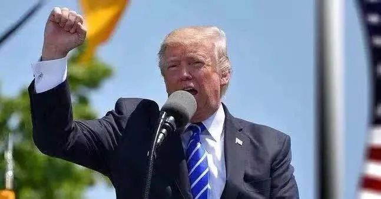
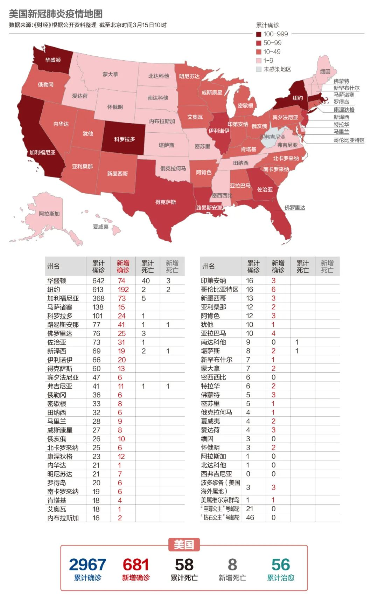

确诊超560例8州进入紧急状态，美国是否会步意大利后尘？
原文链接 备份链接 2月29日，特朗普在保守派政治行动会议上。来源：特朗普推特 记者：刘芳 “ “最害怕的还是（在疫情过后）我人没怎么样但是课却没过。” ” 不断扩散的新冠肺炎疫情给美国东西海岸人口稠密地区持续带来压力，就连总统特朗普也因 …

应对重大公共卫生事件对美国大选影响举足轻重，福特总统在1976年连任失败被指一定程度上受到应对猪流感事件不利的影响，特朗普目前应对疫情的表现被美国媒体称为“灾难”，他能亡羊补牢，避免重蹈覆辙吗

文 |《财经》记者 王晓枫
编辑 | 郝洲
当地时间3月14日，白宫医生表示，特朗普新冠病毒检测结果为阴性，这让外界松了一口气。就在一天前，美国总统特朗普刚刚宣布进入国家紧急状态，拉开美国全面应对新冠疫情大幕。目前，美国确诊的新冠病毒病例已接近3000例，死亡人数已有至少48人。
宣布进入全国紧急状态，意味着联邦政府能动用更多资源抗击疫情，作出更灵活迅速的应对。总统可以紧急状态之名，执行更严厉的防疫措施。特朗普的举措一定程度上给予市场信心，美国股市反弹9%，结束震荡的一周。
然而，这一切却并没有冲淡外界对美国大选的担忧，美国大选正值党内初选白热化阶段，疫情会对投票率、选民安全和大型拉票集会产生怎样的影响仍是未知数，新冠病毒已成为2020年选情最大的“黑天鹅”。
美国总统竞选核心内容之一是大型集会拉票与选民互动，在互动过程中会有频繁的握手和拥抱。如今这种密集接触的传统正受到考验，对新冠病毒的担忧已导致特朗普和民主党参选人拜登和桑德斯取消多项竞选活动。同时疫情的爆发可能从根本上改变大选性质，因为政府要在竞选活动与保护选民和参选者之间寻求平衡。
病毒风险危及两党参选人

角逐总统职位的特朗普和两名民主党人都已年过七十，属于新冠病毒易感人群。特朗普的健康状况引发诸多担忧，因为他不久前在海湖庄园接待了来访的巴西总统博索纳罗。随行的巴西总统府社会传播秘书处负责人法比奥·瓦恩加滕（Fabio Wajngarten）回国后被确诊感染新冠病毒。瓦恩加滕曾与特朗普、美国副总统彭斯一起合影。
不仅是与巴西政府官员接触，特朗普因为频繁参加各种选举拉票大会而广泛接触各界人士，这其中不乏确诊者。一位近日参加美国政界保守派大会人士确诊感染新冠病毒。该大会2月底在华盛顿附近举行，很多保守派政治人物到场，包括特朗普与副总统彭斯，特朗普曾与大会主席握手，后者在会议中接触过确诊病人。
无独有偶，3月初在华盛顿举行的亲以色列游说团体大会上也有两名参会者事后确诊感染新冠病毒，很多国会议员到场，彭斯和国务卿蓬佩奥亦是座上宾。其中，佛罗里达州共和党众议员马特·盖茨（Matt Gaetz）在得知自己曾与确诊患者有过接触时正与特朗普同乘空军一号总统专机，盖茨随即转移到一处无人的舱室，但在下飞机前，特朗普坚持与他短暂交谈。
不过，据盖茨透露，特朗普近日采取了一些预防感染措施，包括频繁使用手部消毒液。特朗普一直不讳言他有洁癖，自称患有“恐菌症”。特朗普近日在白宫疫情简报会上曾对记者们调侃说，“你们可能听说过，我常洗手。”
调侃归调侃，美国目前正在谨慎对待病毒在华府扩散。由于担心自己也被感染，特朗普在3月13日晚也接受了新冠病毒检测，第二天的检测结果显示阴性。在等待病毒检测结果的期间，特朗普还接受了体温检测，结果“完全正常”。对于特朗普和彭斯密切接触的工作人员，白宫也都在进行体温检查。
多场竞选集会被取消
不仅是特朗普，民主党两位参选人的健康安全也颇受关注，拜登和桑德斯之间的辩论原本定于3月15日（周日）在亚利桑那州举行，由于担忧新冠病毒的影响，目前已经改为在首都华盛顿举行。
这种突如其来的变化让家住亚利桑那州菲尼克斯的克莱尔·蒂尓帕克（Claire Tyrpak）非常失望，她在当地电视台负责筹款事务，她是桑德斯的坚定支持者。3月6日，她前往桑德斯在菲尼克斯的竞选动员集会。当时人山人海，排起了长队，大家的参与热情丝毫没有受到选情影响。克莱尔对《财经》记者表示，如今她越来越担忧疫情会对桑德斯竞选集会带来影响，因为这会不利于选情动员。
初选竞选活动在3月10日后急转直下，桑德斯竞选团队率先宣布取消在俄亥俄州克利夫兰的拉票集会，这是新冠疫情在美国暴发以来首个遭取消的初选集会。桑德斯团队表示，将视具体情况决定是否取消未来的集会。拜登竞选团队随即也宣布，取消在克利夫兰的集会。关于是否应该举行集会，拜登表示他将征求美国疾控中心的意见，如果他们的结论是不应举行大规模室内集会，那么将遵照建议停止大型室内集会。
华盛顿州是美国新冠病毒致死人数最多的地区，各位参选人一直避免在该州举行竞选活动。华盛顿州民主党推迟了原定在西雅图举行的一场大型筹款晚宴，该党官员原本希望这场晚宴能吸引参选人和1200多名参与者。
2020年到目前为止，特朗普已经举行十多次竞选集会，每次集会的间隔时间从未超过两周。然而疫情也促使特朗普团队做出改变，取消了原定在内华达州举行的筹款活动以及原计划在拉斯维加斯的共和党犹太人联合会的讲话。除此之外，特朗普竞选团队还宣布取消在内华达州、科罗拉多州和威斯康星州的竞选活动。
新冠病毒防疫要点之一就是避免近距离接触，这正是大型竞选机会的必要元素。著名选举公关幕僚亚力克斯·科南特（Alex Conant）直言，疫情之下，握手以及亲吻婴儿看起来真的很不明智。虽然大多数政治人物都会在握手之后使用洗手液，但他们仍然在冒险。“我预计参选人将很快停止举行集会，直到新冠病毒疫情过去。没有人想让自己的支持者染病。”
对于是否应该举行竞选集会，联邦政府首席传染病专家、国家过敏和传染病研究所（NIAID）所长安东尼·福西（Anthony Fauci）建议，如果集会所在地未出现社区传播，可如期召开。但如果存在社区传播，应三思而行。福西还强调，易感人群，例如年长者尤其是那些有慢性病的老年人，应采取专门防护措施，不要去参加大型集会。
取消大型集会将影响与选民沟通以及动员选民，可能会导致投票率下降，如果老年人因为担忧感染而不去投票恐影响以老年人支持者为主的参选人，而那些依靠年轻选民的参选人可能会短期受益。
中国人民大学国际关系学院副教授刁大明对《财经》记者分析说，在民主党内的初选阶段，如果投票率出现影响，会对桑德斯有利，因为桑德斯的支持者以年轻人为主，如果同步减少投票率，对年轻人影响弱。而且如果取消集会改为在线动员，那么也会对桑德斯有利，因为拜登的支持者遍及各个政治光谱，太多元不好估算在线动员效果。但总体上，拜登领先桑德斯优势明显，这个趋势应该不会被疫情扭转。
目前，拜登获得890张党代表票，桑德斯有736票。民主党参选人拿下1991张代表票就能夺得党内总统候选人提名，从而有望在11月的大选中对阵特朗普。
疫情是否会影响大选很大程度上要取决于能否在今后的八个月中有效控制病毒扩散，如果不能恐对特朗普选情产生影响，其中影响之一就在于投票率。特朗普在2016年大选中能够获胜很大程度上得益于竞选集会造势，若他无法举行这类活动，对于他的竞选造势风格可能是一个沉重打击。
“初选将在六月结束，如果疫情持续发酵，会对特朗普连任选情产生不利影响，影响特朗普支持者投票率。与民主党支持者相比，特朗普支持者年龄偏高且更容易受疫情影响，例如，蓝领工人若感染病毒将被隔离，恐失去工作，这会打消他们的投票热情。”刁大明说。
疫情应对恐成特朗普软肋
2020年大选刚刚铺开，初选将在六月中旬左右结束，接下来将召开两党大会正式提名候选人以及宣布竞选搭档，这将掀开本次大选的高潮。之后，两党总统候选人将会就一系列内政外交话题展开辩论，可以肯定的是，疫情会让公共卫生话题成为焦点，特朗普本次疫情表现将成为民主党的抨击对象。
特朗普上任以来以减税、经济刺激及其它短期措施应对经济问题，并使美国避免经济衰退。冠状病毒却让他措手不及，股市崩盘和检测病毒不利让特朗普备受指责。美国媒体更是将他最初的应对政策称为“灾难”，特朗普被指淡化危机规模，称之为完全来自境外的威胁，只是设置旅行禁令，除此之外没有拿出具体措施。
“疫情对于选情来说是一个双刃剑，现任总统拥有很大行政权力，可以通过设置议程赢得民众好感，避免疫情成为减分项。然而特朗普此前只是出台旅行禁令，这无济于事。特朗普应该庆幸桑德斯、拜登或其他民主党参选人不是州长，否则通过比较将会立判高下。”刁大明说。
由于一度迟迟不出台联邦层面政策，急速传播的疫情在美国带来恐慌，不仅引发超市抢购风潮，还让全美面临停工停学的局面。这样一来，病毒不仅对特朗普的选民健康构成问题，而且构成经济问题，这会危及连任。
“特朗普总统的政治强项不再有效了，现在需要的是能让美国人安心，让人们看到，总统有能力控制局面，然而，特朗普恰恰无法向国人传达出这一感觉。”乔治城大学教授马克·罗姆（Mark Rom）表示。
疫情带来的次生灾害特别是无薪休假将会对特朗普的核心选民蓝领工人带来巨大生活负担，若特朗普不能保证他们免受疫情冲击，那么会打消这些人的投票积极性。为了避免这种情况，特朗普政府已经与众议院民主党人达成一项法案，允许提供免费病毒检测，并向许多受疫情影响的人提供带薪病假，这将一定程度上缓解中下层收入者压力。
应对重大公共卫生事件对大选影响举足轻重，福特总统在1976年连任失败被指一定程度上受到应对猪流感事件不利的影响。1976年冬季，美国某军事基地暴发猪流感，引起人们对一场毁灭性大流行病的恐惧。时任总统福特宣布了一项全民免疫接种计划。到该年底，美国2亿左右人口中有4000万人接种新疫苗，但疾病大流行没发生，这导致政府公共卫生声誉受损，因为大规模疫苗接种成本高昂且疫苗本身还造成大约30人死亡。当年有些人将疫苗事件归咎于福特总统，他在那年竞选连任中输给卡特。
美国国家医学院前任院长哈维•芬伯格（Harvey Fineberg）在2009年甲流大爆发时反思1976年的决策时坦言，时任政治领导人希望做正确的事情，但缺乏技术知识。技术专家与决策者之间沟通关系重大，决策者和专家不能完全依赖某些半定量评判标准，例如通常、有时和可能。日常用语对追踪和调整流感暴发一类动态局势是不充分的。技术专家的责任是认真和精确思索已知和未知，准确描述不确定性，并在情况变化时随时加以调整，同时将信息传递给决策者。决策者和技术专家在面对大众时，都会遇到严重的交流困难，而大众的理解、支持和参与可能是关键性的。

▲点击图片查看更多疫情报道
责编 | 蒋丽 lijiang@caijing.com.cn
本文为《财经》杂志原创文章，未经授权不得转载或建立镜像。如需转载，请在文末留言申请并获取授权。
原文链接 备份链接 2月29日，特朗普在保守派政治行动会议上。来源：特朗普推特 记者：刘芳 “ “最害怕的还是（在疫情过后）我人没怎么样但是课却没过。” ” 不断扩散的新冠肺炎疫情给美国东西海岸人口稠密地区持续带来压力，就连总统特朗普也因 …
原文链接 备份链接 据美国《纽约时报》汇总各州公共卫生部门公布的新冠肺炎确诊病例，截至当地时间5日下午，全美已有163例确诊病例，分布在18个州。华盛顿州公共卫生部门5日公布了一例死亡病例，使得全美死亡病例达到了12例。 数据显示，美国 …
原文链接 备份链接 新冠疫情是一场全球灾难，也是各国公共卫生的练兵场。 按照世界卫生组织专家、伦敦卫生和热带医学院流行病专家戴维 · 海曼（David Heymann）教授的观点，阻止新冠病毒传播的更重要的因素是一个国家医疗保健体系的实 …
原文链接 备份链接 这是一种全新的病毒，还有很多未知。它代表了一种演进的公共卫生突发事件，我们还会在其他国家看到更多确诊病例。中国对传染病以及卫生突发事件的诊断、治疗和管理能力在过去20年得到了显著的提升。 文 |《财经》记者 江玮 发自 …
原文链接 备份链接 目前包括中国大陆在内，全球已经有41个国家和地区出现了疫情，其中，韩国是中国大陆之外疫情蔓延最快的国家。 尽管如此，世卫组织不希望在“没有谨慎和清晰地分析事实情况之前”仓促宣布疫情为全球“大流行病” 文 |《财经》特派 …